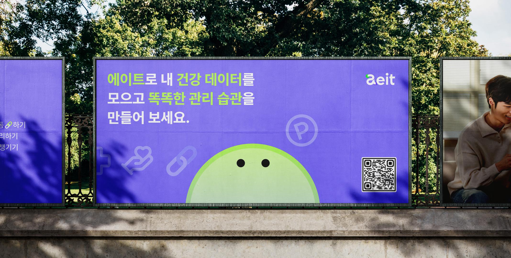
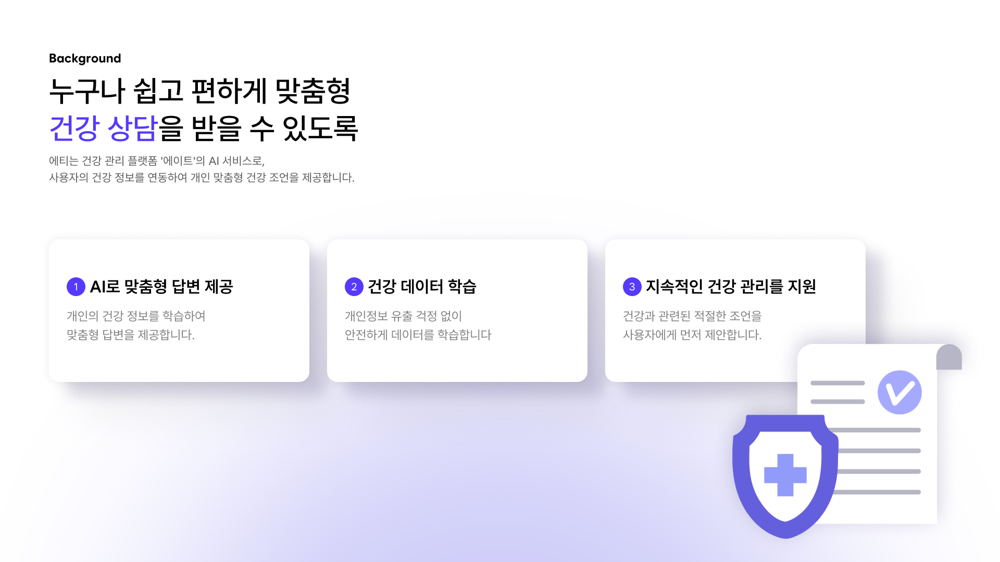
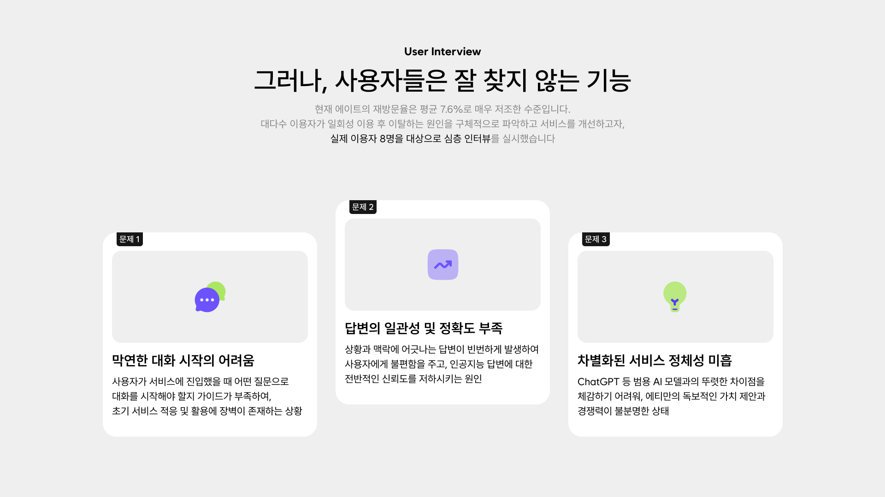
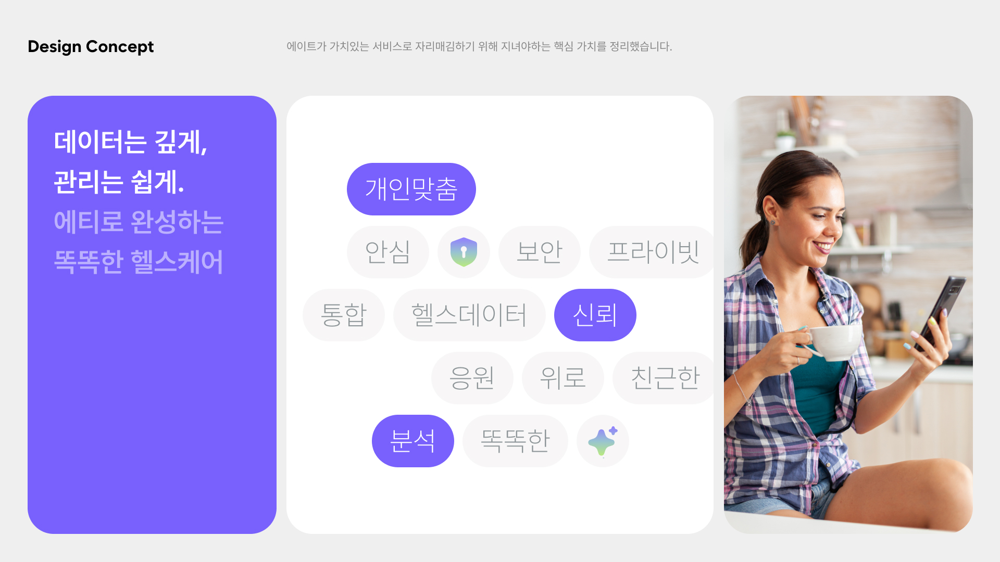
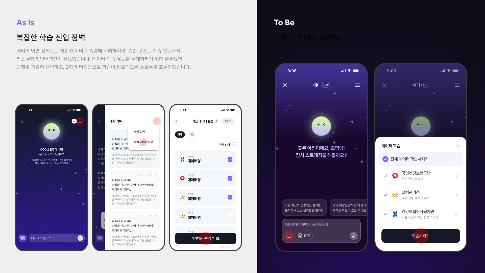
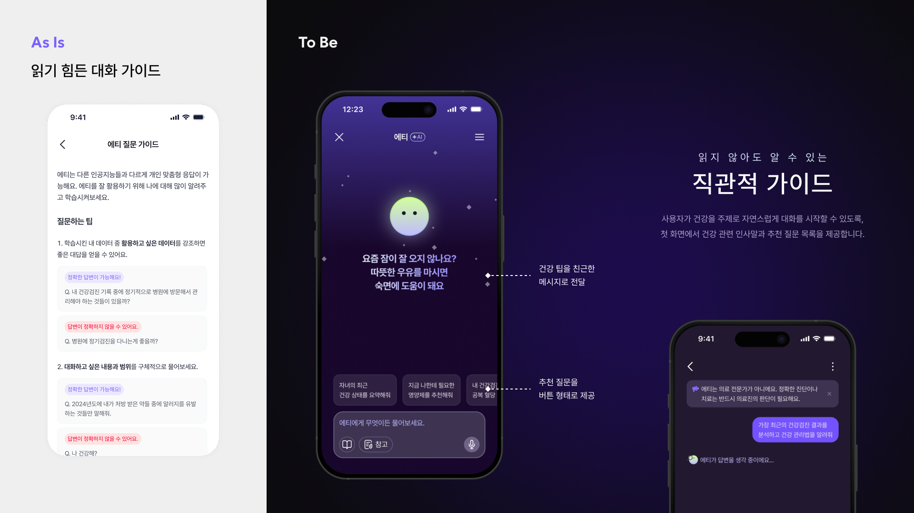
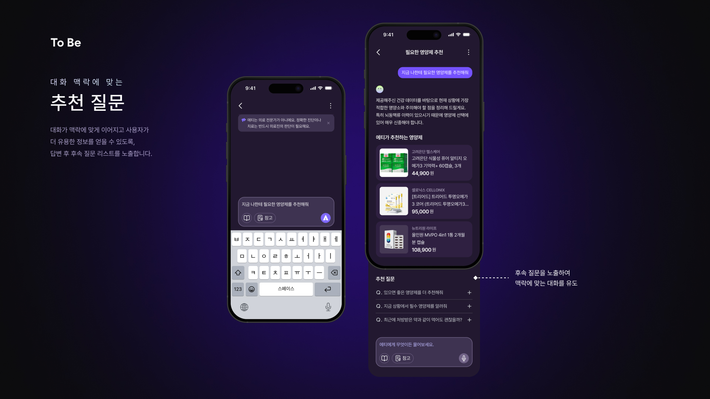
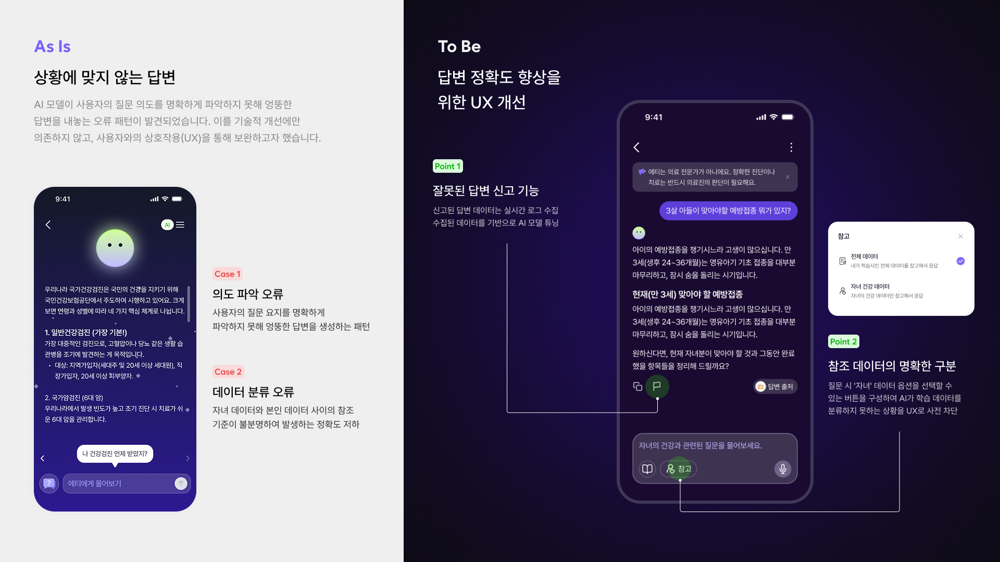
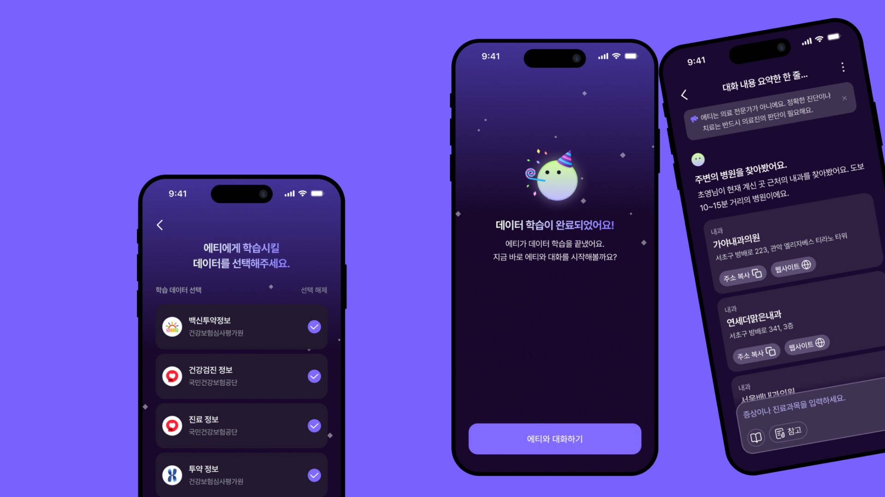

LLM 서비스 에티 개선하기 : 평범한 AI 챗봇에서 스마트한 건강 비서로
에티는 사용자 건강 데이터를 기반으로 개인화된 답변을 제공하는 LLM입니다. 이번 개선에서는 UX를 고도화해 AI 답변의 정확도와 일관성을 강화했습니다. 또한 추천 질문 기반의 대화 흐름을 설계해 사용자 경험을 한층 개선했습니다.








Previous Project
AI로 광고 캠페인 타겟 설정하기
Next Project
광고 성과 대시보드 디자인